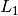
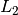
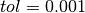
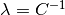
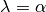
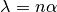
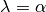
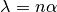

FAQ¶
Here we summarize some answers to questions that came up from users when deploying Snap ML for diverse applications. We also provide more details about the features of our library.
Should I use the same number of iterations with or without GPUs?
How should I choose the number of threads in the GPU implementation?
Note
The discussions and explanations on this page apply to the original Snap ML APIs: snap-ml API and snap-ml-spark API but only partially to pai4sk API.
What type of problems can I solve using Snap ML?¶
Snap ML offers different models for regression, binary classification and multi-class classification.
Regression: Linear Regression with  (Lasso) and  (Ridge) regularization.
Binary Classification: Logistic Regression with / regularization and SVM.
Multi-Class Classification: Logistic Regression with / regularization and SVM.
The regularization type is defined through the penalty parameter at model initialization time.
Should I preprocess the training data before training?¶
Yes, for better performance you should do feature normalization on your data. You can use the sklearn functionality to do this. Also do not forget to apply the same preprocessing to the test data before prediction.
>>> from sklearn.preprocessing import normalize
>>> data_normalized = normalize(data, axis=1, norm='l1')
How many iterations should I perform?¶
You want to use enough iterations such that your model converges but not more than needed. The optimal value is application specific and can be difficult to predict. To simplify this choice for the user, Snap ML implements an early stopping functionality which is active by default (see this Question for details).
For a user that wants to manually control the number of iterations we suggest to set tol=0 and use the parameter max_iter to control the number of iterations.
To investigate if your model has already converged, you can enable the verbose mode and print the evolution of the training cost during training. If it reaches a stable value, your model has converged. Please note that the cost evaluation comes with additional overhead. An alternative to model debugging is by enabling the return_training_history mode. For more details see this Question.
How does early stopping work?¶
If the early stopping functionality is active (default behavior), the algorithm is automatically stopped as it does not make significant progress anymore. To implement this, Snap ML evaluates the relative change in the model coefficients after every iteration and compares it to a threshold value. The algorithm is run until the relative change is smaller than the threshold or until the maximum number of iterations max_iter is reached. The threshold is set to a good practical value () by default, but can be manually set through the parameter tol.
What is an iteration in Snap ML?¶
Snap ML operates in epochs and one iteration corresponds to one pass through the data. How the data is processed depends on the specific solver being used and is different on CPU and GPU.
Should I use the same number of iterations with or without GPUs?¶
No, if you enable GPU acceleration ( use_gpu=true ) you need more iterations to reach a certain training accuracy than if you train only using CPUs. The reason is the asynchronous solver used in the GPU which requires more conservative – and thus more – updates than the sequential CPU solver.
How should I choose the number of threads in the GPU implementation?¶
The number of threads ( n_threads ) determines the parallelism used to evaluate a single coordinate update. This involves an inner product computation between the shared vector and an individual column of the data matrix. Thus, for dense data or long shared vectors n_threads should also be chosen larger.
Should I use the primal or the dual solver?¶
For models where both solvers are available, the optimal choice of the solver depends of the dimensionality of the training dataset. In general, we recommend to use the dual solver if the number of examples in your training dataset is larger than the number of features. Otherwise use the primal solver. However you need to be aware that when using the primal solver, you need to transpose the data first.
How does regularization in Snap ML compare to sklearn?¶
We provide some examples in the Examples section. You need to be aware that the regularization parameter in sklearn is defined differently for the individual models – the mapping can be derived from the equations of the objective which are stated in the Manual for snapML and here for sklearn. For most classification tasks a regularization parameter is used in sklearn which is equivalent to  used in snapML. For most regression tasks sklearn uses an  regularization parameter which is equivalent to using  for Ridge Regression and scaled as  for Lasso. To control the regularization, the user can manually set the parameter
regularization parameter which is equivalent to using  for Ridge Regression and scaled as  for Lasso. To control the regularization, the user can manually set the parameter regularizer.
Why doesn’t my training accuracy match the sklearn’s?¶
This could have different reasons as follows:
Your regularization does not match the regularization used in sklearn and thus you learn your model based on a different objective. See this Question for more details about how to pick the regularizer.
Sklearn is using data normalization internally which can impact the training. You can normalize the data before training. See this Question for more details.
It could also have a technical reason and a fix will come with the next release. That is, if the data in memory is not contiguous, Snap ML cannot operate on it. This can be fixed using the
.copy()command in Python on the training data before calling the training.
How can I interpret the learnt model?¶
For -regularized models Snap ML offers an attribute support. This returns a list of indices of the features that contribute significantly to the prediction of the model. The stronger the regularization, the less features will appear in this list.
Similarly, for the SVM classifier the attribute support returns a list of indices of the support vectors that contribute to the classification decision. This is a list of the most important examples.
What does privacy mean?¶
In Snap ML we offer the functionality for training differentially private machine learning models. Differential privacy is emerging as a standard to quantify risk when training a machine learning model using sensitive/private information, when the resulting model is then exposed to potentially adversarial users. A differentially private model protects the individual elements of the dataset it is trained on. This means by having access to the model an adversary can not deduce any information about the training data.
To enable this functionality a user of Snap ML has to set the privacy parameter, which is disabled by default, to True. Snap ML can train a model with any desired level of privacy which can be steared with the privacy_epsilon parameter.
For a user that is not confident about which privacy level to choose, the Snap ML default values are chosen to provide a reasonable level of privacy.
How can I accelerate inference using Snap ML?¶
If you want to use multi-threading to accelerate inference you need to set the number of threads num_threads in the prediction function to a value larger than 1.
Why is it not possible to use the dual solver for Lasso?¶
The regularization term in the Lasso objective is non-smooth. Thus, the primal-dual mapping is not well defined for this problem. The same holds for other -regularized models, such as Logistic Regression.
What is the difference between snap_ml_local and pai4sk?¶
pai4sk is an interface that provides the full functionality of sklearn. Internally it uses training routines of snap_ml_local to accelerate the training of generalized linear models. If a user wants to train a linear model from pi4sk there are two options:
>>> from pai4sk import LogisticRegression
>>> from pai4sk.linear_model import LogisticRegression
Depending on the set of parameters used to initialize the linear model, pai4sk will automatically run the linear model of snap_ml or the one from sklearn.
For example, if the use_gpu parameter is set to True, then pai4sk will run the linear model of snap_ml_local as there is no GPU-accelerated linear models in sklearn.
How to debug my model?¶
You can use the verbose or the return_training_history options.
By setting verbose to True, you can see the evolution of the training cost in real time during training. By default verbose is set to False.
By setting return_training_history to all, snap ML will return at the end of the training procedure a dictionary with the following information:
[{ 'epochs': [0, 1, 2, ... 48, 49],
't_elap_sec': [0.3114819999999999, 0.7432809999999999, 1.175951, ... 21.167614000000007, 21.600479000000007],
'train_obj': [26484195.516386107, -1090401.5263258994, -4249279.141126189, ... -15662998.827800183, -15663368.240871042] }]
To generate a Python scatter plot that shows epoch vs. train_obj, you can run:
training_history = snapml_model.fit(train_data)
# without running X server
# import matplotlib as mpl
# mpl.use('Agg')
import matplotlib.pyplot as plt
fig = plt.figure()
plt.plot(training_history[0]['epochs'], training_history[0]['train_obj'], '-ok', color='black')
plt.xlabel('Epoch no.')
plt.ylabel('Train objective')
fig.savefig('debug_convergence.pdf')
By setting return_training_history to summary, the returned dictionary will include the elapsed time and the training objective only for the last epoch as follows:
[{'epochs': 48, 't_elap_sec': 21.088178, 'train_obj': -15663149.782160789}]
By default return_training_history is disabled (set to None).
Note
The evaluation of the additional information for debugging purposes introduces an overhead to the training algorithm. Thus for doing performance studies these options should be disabled, that is verbose = False and return_training_history = None.